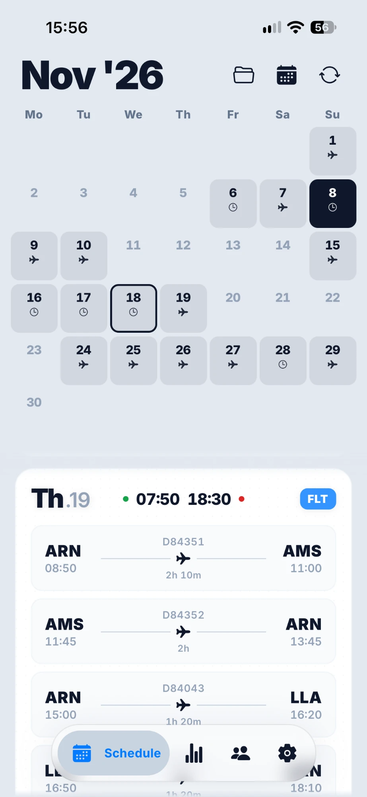
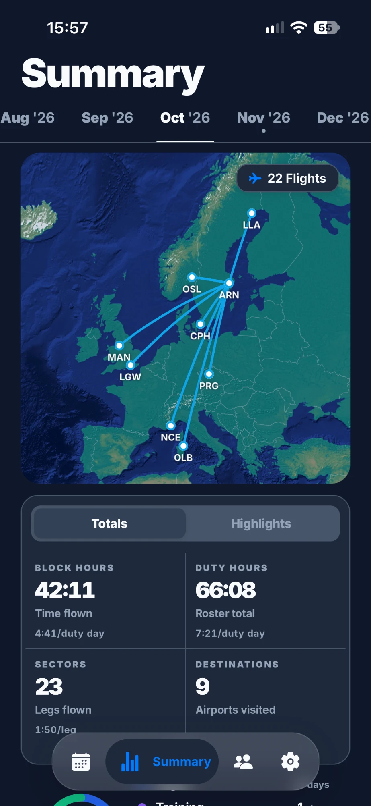
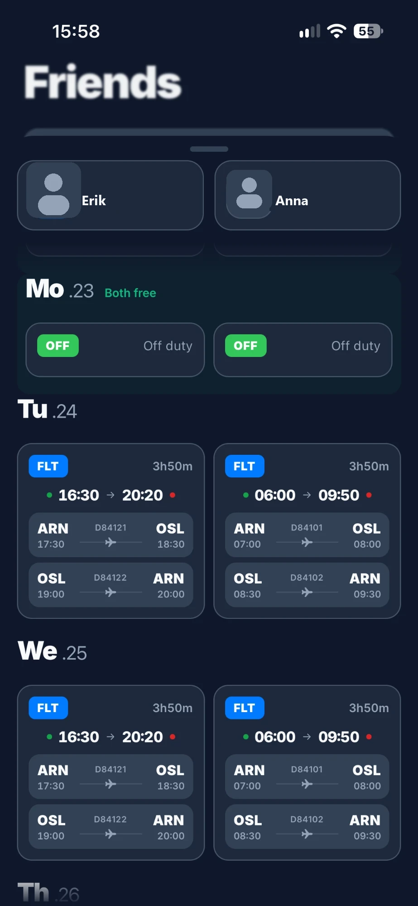
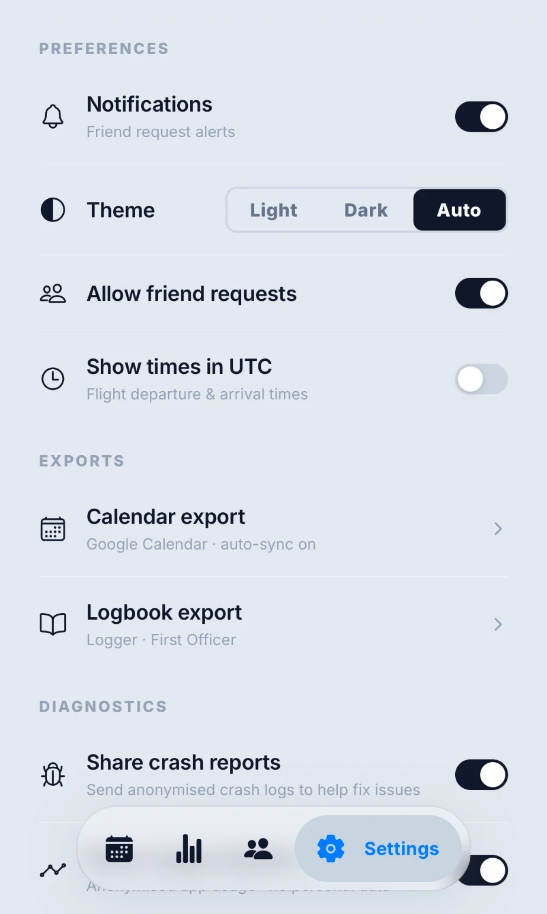

Everything your roster should have done from day one.

See the whole month, not just today.
Swipe through a full calendar grid of your roster, color-coded by duty type. Tap any day to open its flights, times, and check-in details — no more scrolling a PDF to find next week's trip.

Your month, mapped out.
Block hours, duty hours, sectors, and destinations — totalled automatically from your synced roster, with a route map so you can see exactly where the month took you.

See who's free, together.
Add a friend and Tailwind lines your rosters up side by side — day by day, duty by duty — so planning a trip together takes one glance instead of two group chats.

Make it yours, then forget about it.
Light, dark, or auto. UTC or local times. Auto-sync to Google Calendar and export straight into your logbook — set it up once and Tailwind keeps it running in the background.
Need a hand?
Contact us
Questions, bug reports, or feature requests — email us directly.
Email SupportOr write to us at tailwind.support@gmail.com
Delete your data
Request account or data deletion at any time by contacting us.
Request DeletionOr write to us at tailwind.support@gmail.com
Frequently asked questions
01How do I sync my roster?
Open Tailwind, go to the Schedule tab, and tap Sync. The app opens your airline's crew portal in the background, signs you in, and downloads your latest roster automatically. You may be asked to approve a push notification as part of your airline's normal sign-in process.
02Is my crew portal password stored?
No. Tailwind never collects or stores your crew portal password. Your username is kept only in your device's encrypted secure storage and is never sent to or retained on our servers. See our Privacy Policy for full details.
03My roster isn't syncing or looks wrong — what do I do?
Try syncing again first — a slow portal connection is the most common cause. If it keeps failing, use the in-app "Report an issue" option under Settings, or email us at tailwind.support@gmail.com with your airline and a description of what happened, and we'll look into it.
04Can I share my roster with friends?
Yes. Tailwind supports friend roster sharing — once a friend request is accepted, they can view your synced roster. This is protected so only accepted friends can see it, and you can revoke access at any time from Settings.
05How do I delete my account?
Email tailwind.support@gmail.com from the address associated with your account and we'll delete your account and all associated data.